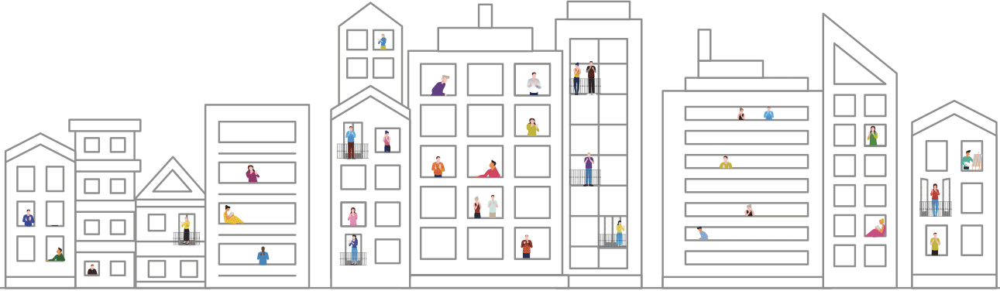
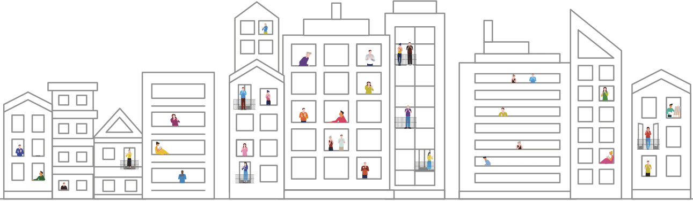
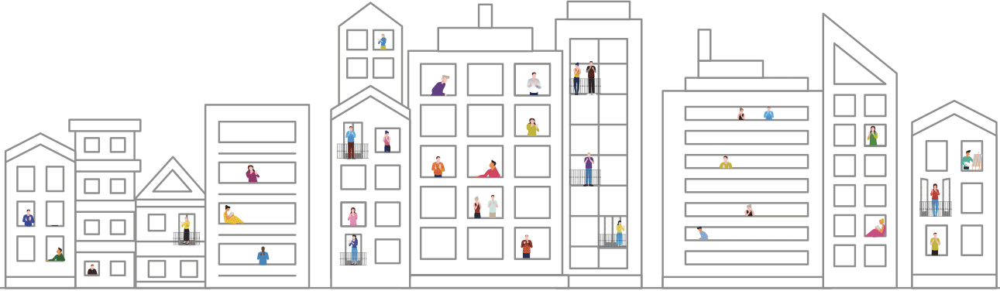
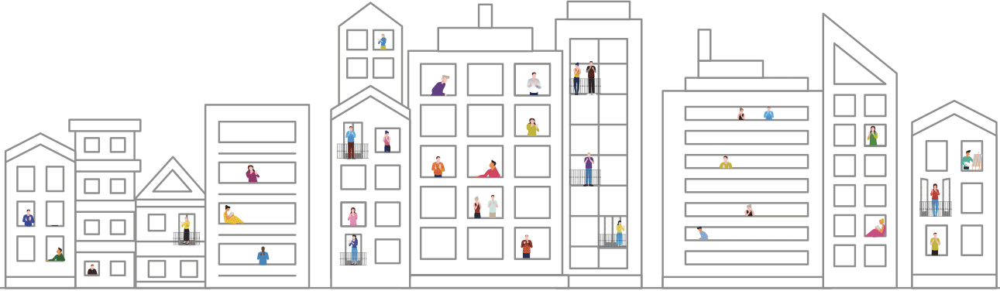

COVID-19 : Tous mobilisés, tous solidaires
En cette période de crise, l’urgence habituelle s’est bien souvent transformée en urgence extrême. ICF Habitat Atlantique en a pris la mesure et a très vite activé son réseau de partenaires. Réaction immédiate… Ici ou là, sur l’ensemble du territoire, le bailleur social a pu accueillir dans son patrimoine des familles fragiles et vulnérables. Dans le même temps, grâce à une communication connectée et aux appels réguliers, les conseillers sociaux sont restés à l’écoute et attentifs aux difficultés financières de certains locataires. Anticipant les situations d’impayés de loyers, ils ont travaillé au cas par cas sur des mesures transitoires pour éviter que les situations ne s’aggravent. Plan d’apurement adapté, orientation vers les structures et dispositifs d’aides, accompagnement personnalisé… Les locataires concernés ont été rassurés et ont vécu le confinement de manière plus sereine !

4 logements d’urgence à Nantes pendant la crise de la Covid-19
Face à l’augmentation des demandes d’hébergement d’urgence de la DDCS de Nantes pour loger les publics prioritaires (via un bail associatif ou glissant), et répondant aux sollicitations du SIAO auprès des bailleurs sociaux, ICF Habitat Atlantique s’est positionné sur 4 logements à Nantes.
Merci à l’association bordelaise « Atelier Remuménage »
qui, pendant la crise, a maintenu les déménagements pour les personnes victimes de violences conjugales.

ICF Habitat Atlantique salue la réactivité des services de secteur (CCAS,MDSI) qui malgré le confinement se sont déplacés dans le cadre de la protection de l’enfance ou des troubles de voisinage.
VIOLENCES CONJUGALES
Chaque année, près de 200 000 femmes sont victimes de violences
physiques et/ou sexuelles. Mobilisé dans ce combat, et en lien avec
ses partenaires de l’hébergement d’urgence, ICF Habitat Atlantique
participe à la protection de ces femmes en danger.
En cette période de confinement, son action a pris une dimension
particulière ! Le bailleur a largement communiqué et sensibilisé ses
locataires, a relayé les campagnes nationales autour du 3919 et a pu
accueillir plusieurs femmes dans son patrimoine, notamment grâce à
ses partenariats avec G-Xiste, le CAPS
ou l’ONM.